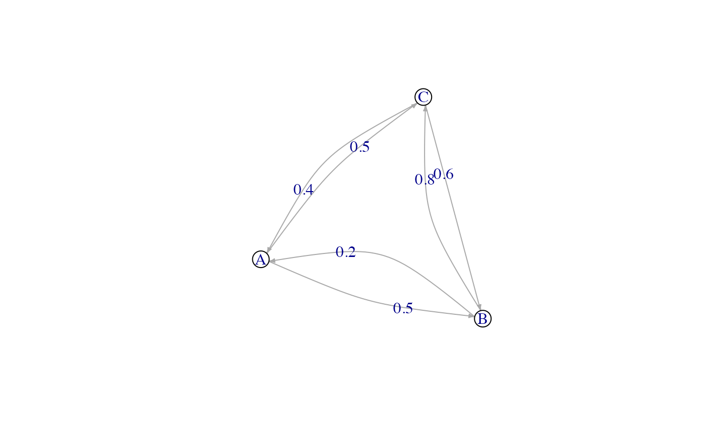
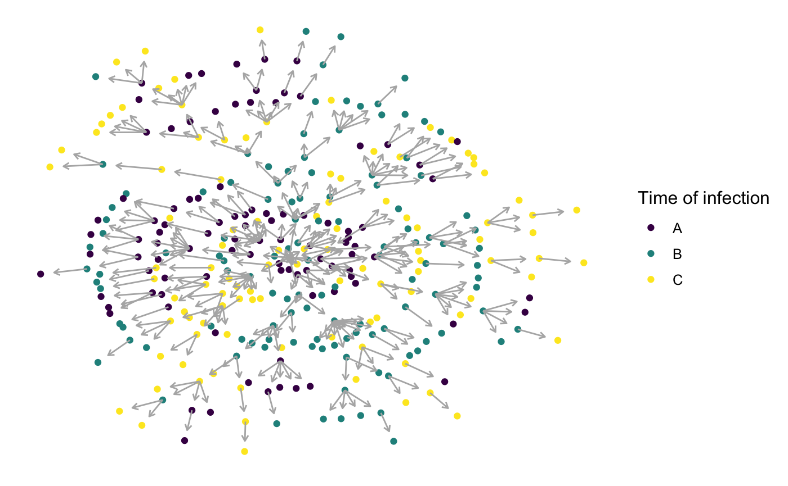
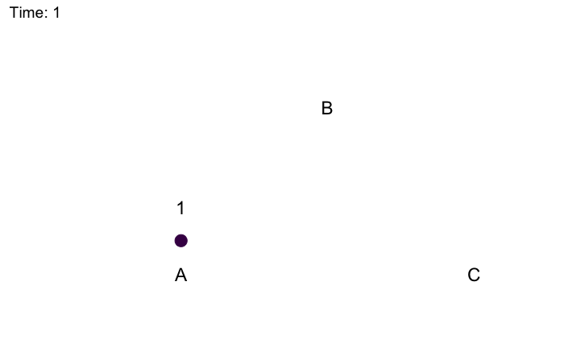

vignettes/discrete.Rmd
discrete.Rmdnosoi can accommodate a wide range of epidemiological transmission scenarios, including structured host populations (in discrete states), such as for example geography (location A, location B, etc.), and allows parameter values to change according to the host’s current location. This tutorial will focus on setting up a nosoi simulation for a single-host pathogen whose host population is structured between different locations.
We will consider here a population of hosts that are in three different locations called “A”, “B” and “C”. Hosts can move (if they undergo a movement event) between these locations with a certain probability you can set or derive from other data. Here, the transition matrix, called here after structure.matrix is:
#> A B C
#> A 0.0 0.5 0.5
#> B 0.2 0.0 0.8
#> C 0.4 0.6 0.0Which can graphically be represented:

For structure.matrix to be adequate, a few rules have to be followed:
structure.matrix should be of class matrix;structure.matrix should have the same number of rows and columns, and they should have the same names;structure.matrix rows represents departure state and columns arrival states, the value is the probability from going from departure state to arrival state if movement is undergone, and should thus sum up to 1.##Setting up the simulation
As we have seen before , the wrapper function nosoiSim takes all the arguments that will be passed down to the core function, in the case of this tutorial: singleDiscrete (for “single host, discrete population structure”). We thus start by providing the options type="single" and structure=TRUE to set up the analysis:
This simulation (singleNone) type takes several arguments or options to be able to run, namely:
length.simmax.infectedinit.individualsinit.structurestructure.matrixpExit with param.pExit, diff.pExit and timeDep.pExit
pMove with param.pMove, diff.pMove and timeDep.pMove
nContact with param.nContact, diff.nContact and timeDep.nContact
pTrans with param.pTrans, diff.pTrans and timeDep.pTrans
prefix.hostprogress.barprint.stepAll the param elements provide individual-level parameters to be taken into account; the diff elements inform the simulator if there is a differential probability according to the state the host is currently in and the timeDep elements inform the simulator if the “absolute” simulation time should be taken into account.
length.sim and max.infected are general parameters that define the simulation: length.sim is the maximum number of time units (e.g. days, months, years, or another time unit of choice) during which the simulation will be run, whereas max.infected is the maximum number of individuals that can be infected during the simulation. The simulation will thus run until either the time limit or the maximum number of infected individuals is reached.
init.individuals and init.structure are the “seeding parameters”. init.individuals defines the number of individuals (starting at 1, should be an integer) that will start a transmission chain and init.structure their original location in the structured population (has to be the same original location for all starting individuals). Keep in mind that you will have as many transmission chains as initial individuals, which is equivalent as launching two independant nosoi simulations. The location provided in init.structure should of course be present in the structure.matrix.
Here, we will run a simulation starting with 1 individual in state “A”, for a maximum of 1.000 infected individuals and a maximum time of 300 days.
The core functions pExit, nContact and pTrans each follow the same principles to be set up (see General principles and see Get started for more details). To accommodate several scenarios, they can be constant, time-dependent (relative time since infection for each individual or “absolute”" time of the simulation), the host’s current location, or even individually parameterized, to include some stochasticity at the individual host level. In every case, the function provided, like all other core function in nosoi, has to be expressed as function of time t, even if time is not used to compute the probability. In case the function uses individual-based parameters, you have to specify a list of functions (called param.pExit, param.nContact or param.pTrans) ( see Get started ). If no individual-based parameter is used, then param.pExit is NA.
Keep in mind that
pExit,pMoveandpTranshave to give back a probability (i.e. a number between 0 and 1) whilenContactshould give back a positive natural number (positive integer).
You can combine the influence of several parameters, such as time since infection, “absolute” time of the simulation, the hosts current location and individual-based parameters within the same function.
Time since infection, “absolute” time and current location should ALWAYS be designated by
t,prestimeandcurrent.inrespectively, and be in that order and first of the function parameters.
pExit, param.pExit, timeDep.pExit, diff.pExit
pExit is the first required fundamental parameter and provides a probability (per unit of time) for a host to leave the simulation (either cured, died, etc.).
Here are some possible functions for pExit:
p_Exit_fct <- function(t){return(0.08)} #as a constant
p_Exit_fct <- function(t){plogis(t,20,2)} #as a time-since infection dependent function
p_Exit_fct <- function(t,pExit.param1){plogis(t,pExit.param1,2)} #as a time-since infection dependent function with an individually parameter
p_exit_param1 <- function(x){rnorm(x,mean = 10,sd=2)} #sampling one parameter for each infected individualHere are some possible values for param.pExit:
param.pExit=NA #without individual-based parameter
param.pExit=list(pExit.param1=p_exit_param1) #with 1 individua-based parametertimeDep.pExit allows for pExit to be dependant of the “absolute” time of the simulation, to account, for example, for seasonality or other external time related covariates. By default, timeDep.pExit is set to FALSE. Here is a possible functions for pExit when timeDep.pExit = TRUE:
diff.pExit informs the simulator if pExit is dependant of the host’s current state within the structured population. By default, diff.pExit is FALSE. Here is a possible functions for pExit when diff.pExit = TRUE:
p_Exit_fct <- function(t,current.in){
if(current.in=="A"){return(0)}
if(current.in=="B"){return(0.5)}
if(current.in=="C"){return(1)}}In that case, every state possible should be taken into account. You can of course also have an individually parameterized pExit, being both dependant of the time since infection (t) and “absolute” time (prestime), such as:
pMove, param.pMove, timeDep.pMove and diff.pMove
pMove is the probability (per unit of time) for a host to move to a different state (for example, leaving state “A”). It should not be confused with the probabilities extracted from the structure.matrix, which represent the probability to go to a specific location once a movement is ongoing (for example, going to “B” or “C” while coming from “A”). Here are some examples:
p_Move_fct <- function(t){return(0.1)} #a constant
p_Move_fct <- function(t){plogis(t,20,2)} #as a time-since infection dependent function
p_Move_fct <- function(t,prestime){(sin(prestime/12)+1)/2} #as "absolute"-time dependant.
p_Move_fct <- function(t,current.in){
if(current.in=="A"){return(0.1)}
if(current.in=="B"){return(0)}
if(current.in=="C"){return(0.2)}
} #location dependent
p_Move_fct <- function(t,pExit.param1){plogis(t,pMove.param1,2)} #as a time-since infection dependent function with an individually parameter
p_move_param1 <- function(x){rnorm(x,mean = 10,sd=2)} #sampling one parameter for each infected individualFor a constant or time-dependent function, with no individual parameter, param.pMove is NA. In the case of an individually parameterized pMove, the functions for the parameters have to be wrapped into a list, called param.pMove. As with pExit, pMove can be dependant of the “absolute” time of the simulation by turning timeDep.pMove = TRUE and/or dependant of the current position of the host if diff.pExit = TRUE. General recommandations (order of the arguments, etc) apply here too.
nContact, param.nContact, timeDep.nContact and diff.nContact
nContact represents the number (a positive integer) of potentially infectious contacts an infected hosts can encounter per unit of time. At each time point, a number of contacts will be determined for each active host in the simulation. The number of contacts (i.e. the output of your function) has to be an integer and can be set to zero. Like every core functions, it has to be be expressed as a function of t (the time since infection), but it can take various forms. Here are some examples:
n_contact_fct = function(t){return(2)} #to get a constant number of contacts for each hosts, here 2.
n_contact_fct = function(t){sample(c(0,1,2,3),1,prob=c(0.4,0.3,0.2,0.1))} #to get a varying number of contacts for each hosts.
n_contact_fct = function(t){round(rnorm(1, 3, 1), 0)} #another example of varying number of contacts for each hosts.
n_contact_fct = function(t,prestime){
if(prestime < 10){round(rnorm(1, 9, 1), 0)}
if(prestime >= 10){round(rnorm(1, 3, 1), 0)}
} #for an absolute time dependent valueFor a constant or time-dependent function, with no individual parameter, param.nContact is NA. In the case of an individually parameterized nContact, the functions for the parameters have to be wrapped into a list, called param.nContact. As with pExit, nContact can be dependant of the “absolute” time of the simulation by turning timeDep.nContact = TRUE and/or dependant of the current position of the host if diff.nContact = TRUE. General recommandations (order of the arguments, etc) apply here too.
pTrans, param.pTrans, timeDep.pTrans and diff.pTrans
The pTrans function is the heart of the transmission process and represents the probability of transmission over time (when a contact occurs). This function returns the probability (i.e. a value between 0 and 1) dependent on the time (t) since the host’s infection. It is intended to work with a set of parameters (at least 1) defined by param.pTrans, that will characterize the dynamics of the transmission probability over time, as well as introducing some individual based stochasticity. Since each host is different (because of slightly different biotic and abiotic factors), you can expect each host to show differences in the dynamics of infection, and hence probability of transmission over time. The parameters defined in param.pTrans are hence also functions that will sample parameter values (param.pTrans is a list of functions). timeDep.pTrans allows for pTrans to be dependant of the “absolute time” of the simulation, to account, for example, for seasonality or other external time related covariates. diff.pTrans allows for pTrans to be dependant of the host’s location.
As an example, let’s consider the following function for pTrans, in the form of a threshold function:
This function returns a transmission probability p given the time since infection t and two parameters, p_max, the maximum transmission probability and t_incub, the length of the incubation period (the threshold). If t is bigger than t_incub, then the transmission probability is p_max; if not, it is equal to 0.
p_max and t_incub need to be specified. If we fix the values, for example to 0.8 and 5 units of time respectively, we assume that each host will react the same to the infection, as if they were perfect clones. To more accurately match reality, nosoi forces you to sample the values of each parameters from a function, such as:
p_max_fct <- function(x){rbeta(x,shape1 = 5,shape2=2)}
t_incub_fct <- function(x){rnorm(x,mean = 5,sd=1)}Here, p_max will be sampled from a beta distribution, with shape parameters 5 and 2, and t_incub will be sampled from a Gaussian distribution, with mean 5 and standard deviation 1. x will be the number of draws to perform. If you want to fix the value of one or all parameters, you can use a sampling function that will always give you the same value, such as:
In any case, the functions for pTrans parameters have to be wrapped into a list, called param.pTrans. The name of each function in the list has to have the same name as the parameter it is sampling for pTrans. Here, it will look like:
At this step, the nosoi function should look something like this:
SimulationA <- nosoiSim(type="single", structure=TRUE,
length.sim=300, max.infected=1000, init.individuals=1, init.structure="A",
diff.pExit=FALSE,
pExit = p_Exit_fct,
param.pExit = NA,
timeDep.pExit=FALSE,
diff.pMove=FALSE,
pMove = p_Exit_fct,
param.pMove = NA,
timeDep.pMove=FALSE,
diff.nContact=FALSE,
nContact=n_contact_fct,
param.nContact=NA,
timeDep.nContact=FALSE,
diff.pTrans=FALSE,
pTrans = proba,
param.pTrans = list(p_max=p_max_fct,t_incub=t_incub_fct),
timeDep.pTrans=FALSE,
...)prefix.host allows you to define the first character(s) for the hosts’ unique ID. It will be followed by a hyphen and a unique number. By default, prefix.host is “H” for “Host”.
progress.bar allows you to get some information printed on the screen about the simulation while running. It will print something every print.step. By default, progress.bar is activated, with a print.step = 10 (that you can change), but you may want to deactivate it by providing progress.bar == FALSE.
Once nosoiSim is set up, you can run the simulation (here the “seed” ensures that you will get the same results as in this tutorial).
library(nosoi)
#> Loading required package: data.table
p_Exit_fct <- function(t,current.in){
if(current.in=="A"){return(0.02)}
if(current.in=="B"){return(0.05)}
if(current.in=="C"){return(0.1)}}
p_Move_fct <- function(t){return(0.1)}
time_contact_fct <- function(t){sample(c(0,1,2),1,prob=c(0.8,0.15,0.05))}
proba <- function(t,p_max,t_incub){
if(t <= t_incub){p=0}
if(t >= t_incub){p=p_max}
return(p)
}
t_incub_fct <- function(x){rnorm(x,mean = 5,sd=1)}
p_max_fct <- function(x){rbeta(x,shape1 = 5,shape2=2)}
transition.matrix <- matrix(c(0,0.2,0.4,0.5,0,0.6,0.5,0.8,0),nrow = 3, ncol = 3,dimnames=list(c("A","B","C"),c("A","B","C")))
set.seed(846)
SimulationA <- nosoiSim(type="single", structure=TRUE,
length.sim=300, max.infected=300, init.individuals=1, init.structure="A",
structure.matrix=transition.matrix,
diff.pExit=TRUE,
pExit = p_Exit_fct,
param.pExit = NA,
timeDep.pExit=FALSE,
diff.pMove=FALSE,
pMove = p_Move_fct,
param.pMove = NA,
timeDep.pMove=FALSE,
diff.nContact=FALSE,
nContact=time_contact_fct,
param.nContact=NA,
timeDep.nContact=FALSE,
diff.pTrans=FALSE,
pTrans = proba,
param.pTrans = list(p_max=p_max_fct,t_incub=t_incub_fct),
timeDep.pTrans=FALSE,
prefix.host="H",
progress.bar=FALSE,
print.step=10)
#> Starting the simulation
#> Initializing ...
#> running ...
#> done.
#> The simulation has run for 134 units of time and a total of 321 hosts have been infected.Once the simulation is finished, it reports the number of time units for which the simulation has run (134), and the maximum number of infected hosts (321). Note that the simulation has stopped here before reaching length.sim as it has crossed the max.infected threshold set at 1000.
nosoi gives as its output a list contaning a data.table (a more efficient version of a data.frame) called table.hosts with the following structure:
head(SimulationA$table.hosts)
#> hosts.ID inf.by inf.in current.in inf.time out.time active p_max
#> 1: H-1 NA-1 A B 0 15 0 0.8305929
#> 2: H-10 H-6 C C 33 40 0 0.6069331
#> 3: H-100 H-82 B C 104 133 0 0.4952356
#> 4: H-101 H-59 A C 105 113 0 0.6939837
#> 5: H-102 H-63 C C 105 107 0 0.8005005
#> 6: H-103 H-65 C C 105 112 0 0.6983221
#> t_incub
#> 1: 7.203268
#> 2: 4.729960
#> 3: 5.931511
#> 4: 4.600505
#> 5: 6.713453
#> 6: 4.733850Each individual host that was or is infected during the course of the simulation is a line in the data.table. hosts.ID is the unique identifier of the host, while inf.by indicates which host infected it. As you can see, host H-1 has been infected by NA; H-1 is the individual that started the transmission chain. inf.in indicates where the host has been infected, and current.in indicates where the host is at his end of the simulation (either when it exited the simulation or the simulation ended). inf.time is the time (in simulation units of time) when the host has been infected, and out.time is the time (in simulation units of time) when it left the simulation. Here in the top 6 lines, no host has left the simulation (it ran only for 13 units of time). active indicates if the host is still active in the simulation. p_max and t_incub are the individually sampled parameters for pTrans.
The output also contains a data.table (a more efficient version of a data.frame) called table.state, containing the full transition history for each hosts between the states. It has the following structure:
head(SimulationA$table.state)
#> hosts.ID state time.from time.to
#> 1: H-1 A 0 7
#> 2: H-1 C 7 13
#> 3: H-1 B 13 15
#> 4: H-10 C 33 40
#> 5: H-100 B 104 105
#> 6: H-100 C 105 107hosts.ID is the unique identifier of the host. If we take the example of the host “H-1”, we can see that it was present at state “A” (the initial state), from time 0 (time.from) to 7 (time.to), then it moved to state “C” where it stayed until time 13 and then it moved to state “B” where it stayed until time 15. The previous table (table.hosts), informs us that the host “H-1” exited the simulation at time 15.
The transmission chain can be visualized using some of the packages dealing with networks in R. I typically use igraph with ggnetwork, but this is really up to you. Keep in mind that the more nodes (i.e. infected hosts) you have, the more messy (or difficult) the visualisation will be.
library(ggplot2)
library(viridis)
library(igraph)
library(ggnetwork)
# To show the graph, we need to invert column 1 and 2, and discard the first line (i.e. the first host,
# because it shows "NA" as infecting host). We then provide *Nosoi* output as elements for the vertices (nodes).
graph.simA <- graph.data.frame(SimulationA$table.hosts[-1,c(2,1)],directed=T,vertices = SimulationA$table.hosts)
graph.simA.network = ggnetwork(graph.simA, layout = "kamadakawai", cell.jitter = 0.75) #using ggnetwork to provide the layout
#plotting the network
ggplot(graph.simA.network, aes(x = x, y = y, xend = xend, yend = yend)) +
geom_edges(color = "grey70",arrow = arrow(length = unit(0.3, "lines"), type = "open")) +
geom_nodes(aes(color=inf.in)) + scale_color_viridis(name="State when infected",discrete = TRUE) +
theme_blank()
The following animated plot shows the number of infected host per state per unit of time, as well as movement events between state at said unit of time.
#Packages needed:
library(ggplot2)
library(viridis)
library(igraph)
library(ggnetwork)
library(tidyverse)
library(gganimate)
#Getting the layout for the states (as above)
transition.matrix = matrix(c(0,0.2,0.4,0.5,0,0.6,0.5,0.8,0),nrow = 3, ncol = 3,dimnames=list(c("A","B","C"),c("A","B","C")))
melted.transition.matrix <- reshape2::melt(transition.matrix, varnames = c("from","to"),value.name="prob", as.is = TRUE) #melting the matrix go get from -> to in one line with probability
melted.transition.matrix = subset(melted.transition.matrix, prob!=0)
graph.Matrix <- graph.data.frame(melted.transition.matrix,directed=T)
layout = ggnetwork(graph.Matrix, layout = "circle",arrow.gap=0.18)[c(1:3),c(1,2,4)] #using ggnetwork to provide the layout
#Loading data from the simulation
test = SimulationA$table.state
#Loop to get the number of infected in each state per unit of time
results=data.frame()
for (i in 1:max(test$time.from)) {
temp = subset(test, time.from <= i & c(time.to > i |is.na(time.to)))[,c("hosts.ID","state")]
temp$time = i
results=data.table::rbindlist(c(list(temp),list(results)))
}
test2 = results %>% group_by(time,state) %>% summarise(N=length(hosts.ID)) %>% left_join(layout,by=c("state"="vertex.names"))
#Loop to get the transitions between states and their time
results2=data.frame()
for (i in unique(test$hosts.ID)) {
subset.current = test[i]
if(nrow(subset.current) > 1){
for (j in 1:(nrow(subset.current)-1)){
temp = data.table(hosts.ID=i,time=as.integer(subset.current[j]$time.to),from=subset.current[j]$state,to=subset.current[j+1]$state)
results2=data.table::rbindlist(c(list(temp),list(results2)))
}}}
test3 = results2 %>% group_by(time,from,to) %>% summarise(N=length(hosts.ID)) %>% left_join(layout,by=c("from"="vertex.names")) %>% left_join(layout,by=c("to"="vertex.names"),suffix=c("from","to"))
#Animated plot (using gganimate):
animated.plot = ggplot() +
geom_point(data=test2,aes(x,y, color=state,size=N)) +
geom_curve(data=test3, aes(x=xfrom,y=yfrom,xend=xto,yend=yto),arrow = arrow(length = unit(0.03, "npc"),type = "closed"),curvature = 0.2,color="gray50") +
scale_color_viridis(guide=FALSE,discrete=TRUE) + theme_blank() + ylim(-0.5,1.2) + xlim(-0.5,1.2) + geom_text(data=layout,aes(x=x,y=y-0.2,label = vertex.names), size = 6,color="black") +
geom_text(data=test2,aes(x=x,y=y+0.2,label = N), size = 6,color="black") +
transition_states(time) + scale_size_continuous(guide=FALSE,range = c(5, 30)) +
labs(title = "Time: {closest_state}")
animate(animated.plot, nframes=SimulationA$total.time*2+10,duration=40,end_pause=10)